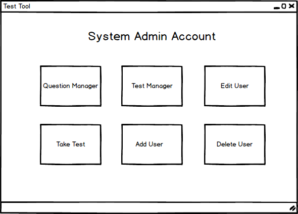

After the user logs in, the system redirects him/her to the appropriate window based on his/her credentials. In this case, the system shows a System Administrator's Account as shown in Figure 1.

Figure 1: System Administrator Account menus.
This menu is the main navigation screen that a system administrator uses to create questions and tests, take tests, add new users, edit existing users and delete users.
The teacher is presented with all four options that the teacher has: Question Manager, Test Manager, Take Tests, and View Grades; plus the option to "Add a User" and "Delete a User"